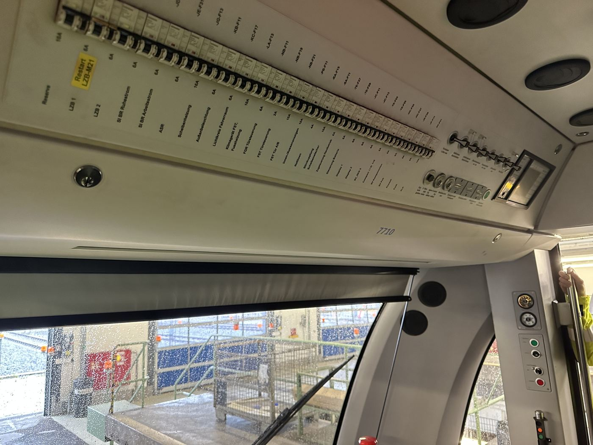

Sicherungskasten im Führerstand mit beschrifteten Stromkreisen, u. a. „Klimagerät FST“ und „Fussheizung“.
Bauteil auf der Seite „Front“
Klimatisiert ausschließlich den Führerstand. Der Fahrgastraum bleibt unklimatisiert, da eine Nachrüstung für den gesamten Innenraum technisch aufwendig wäre (Platz-, Gewichts- und Energiebedarf).
Der Sicherungskasten des Führerstands zeigt eigene, separat abgesicherte Stromkreise für „Klimagerät FST“ (Führerstand) und „Fussheizung“ – ein direkter Beleg dafür, dass Heizung/Kühlung im Fahrzeug tatsächlich nur für den Fahrerbereich vorgesehen ist.
Eine Klimatisierung des gesamten Fahrgastraums würde deutlich mehr Kälteleistung, zusätzliche Luftkanäle und Gewicht erfordern – bei den engen Platzverhältnissen im Wagenkasten und der Vielzahl an Türöffnungen (kurzer Fahrgastwechsel) ein erheblicher Mehraufwand gegenüber der reinen Führerstandsklimatisierung.